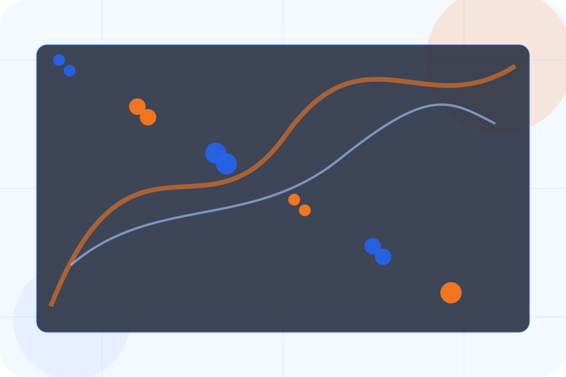
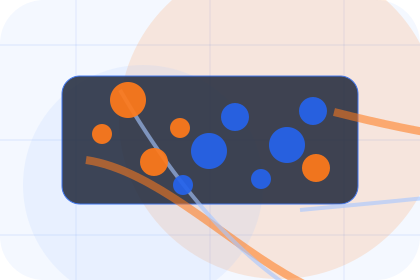
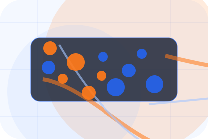
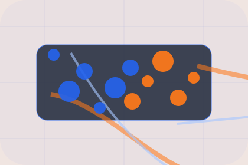

Audit
Who the offer is for, which scope it suits, and when a different route may be better.
ScopedPricing / 01
Pricing opens as a clear logistics decision hub: what Chain offers, who it helps, why it matters, and which route to take first.
The first screen combines positioning, proof, primary action, and fast internal navigation, so people can act immediately or compare the rest of the pricing route with context.
Shipment dashboard hero
Select the closest route and Chain keeps the next step, proof, and follow-up expectation aligned with visibility and delivery control.

Pricing / 02
Rates makes commercial comparison easier by showing fit, scope, and terms before logistics visitors ask for the next step.
The layout keeps price-sensitive decisions honest: it separates starting scope, fuller delivery, and ongoing support so the visitor can ask a sharper question.
View PricingChain frames rates around fit, scope, and terms so visitors can compare cost without losing the outcome.
Request QuoteWho the offer is for, which scope it suits, and when a different route may be better.
ScopedWhat is included clearly enough for logistics, delivery & supply chain visitors to compare value without hidden jargon.
QuotedThe practical details that should be confirmed before someone asks to request a quote.
RetainerPricing / 03
Weight makes commercial comparison easier by showing fit, scope, and terms before logistics visitors ask for the next step.
The layout keeps price-sensitive decisions honest: it separates starting scope, fuller delivery, and ongoing support so the visitor can ask a sharper question.
Explore PricingWho the offer is for, which scope it suits, and when a different route may be better.
Pricing / 04
Distance makes commercial comparison easier by showing fit, scope, and terms before logistics visitors ask for the next step.
The layout keeps price-sensitive decisions honest: it separates starting scope, fuller delivery, and ongoing support so the visitor can ask a sharper question.
Explore PricingWho the offer is for, which scope it suits, and when a different route may be better.
What is included clearly enough for logistics, delivery & supply chain visitors to compare value without hidden jargon.

The practical details that should be confirmed before someone asks to request a quote.
Pricing / 05
Speed shows what changes after the work: clearer decisions, visible progress, and proof points that connect the offer to real outcomes.
The layout connects before-and-after thinking with measured outcomes, making the result easy to scan without promising what the business cannot guarantee.
Explore PricingThe uncertainty, delay, or missed opportunity visitors bring into speed.
The clearer, safer, or more valuable state Chain is designed to support.
The visible cue that connects speed to a believable decision, not a loose claim.
Pricing / 06
Contracts makes commercial comparison easier by showing fit, scope, and terms before logistics visitors ask for the next step.
The layout keeps price-sensitive decisions honest: it separates starting scope, fuller delivery, and ongoing support so the visitor can ask a sharper question.
Explore PricingWho the offer is for, which scope it suits, and when a different route may be better.
What is included clearly enough for logistics, delivery & supply chain visitors to compare value without hidden jargon.
The practical details that should be confirmed before someone asks to request a quote.
Pricing / 07
Volume makes commercial comparison easier by showing fit, scope, and terms before logistics visitors ask for the next step.
The layout keeps price-sensitive decisions honest: it separates starting scope, fuller delivery, and ongoing support so the visitor can ask a sharper question.
Explore PricingWho the offer is for, which scope it suits, and when a different route may be better.
What is included clearly enough for logistics, delivery & supply chain visitors to compare value without hidden jargon.
The practical details that should be confirmed before someone asks to request a quote.
Pricing / 08
Addons makes commercial comparison easier by showing fit, scope, and terms before logistics visitors ask for the next step.
The layout keeps price-sensitive decisions honest: it separates starting scope, fuller delivery, and ongoing support so the visitor can ask a sharper question.
Explore PricingWho the offer is for, which scope it suits, and when a different route may be better.
Pricing / 09
Terms makes commercial comparison easier by showing fit, scope, and terms before logistics visitors ask for the next step.
The layout keeps price-sensitive decisions honest: it separates starting scope, fuller delivery, and ongoing support so the visitor can ask a sharper question.
Explore PricingWho the offer is for, which scope it suits, and when a different route may be better.
What is included clearly enough for logistics, delivery & supply chain visitors to compare value without hidden jargon.

The practical details that should be confirmed before someone asks to request a quote.
Pricing / 10
Chain closes the pricing route with a clear action, a quick reminder of the value, and a low-friction way to request a quote.
Visitors who are ready can use the primary action. Visitors who are still comparing can scan the section links, proof, and support routes before they request a quote.
Request QuoteThe final block keeps the choice simple: act now, compare one more proof route, or send enough detail for a focused response.
Request Quotevisibility and delivery control
A freight-command site with shipment dashboards, network maps, quote modules, and status proof. Pricing ends with a direct path to request a quote, plus enough context for visitors who still need to compare.

Request QuoteInformation is provided for planning and should be reviewed for the final client, location, and operating rules.